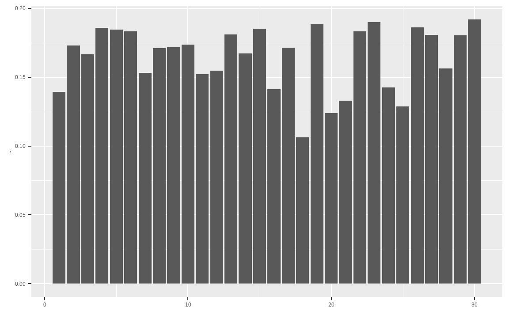
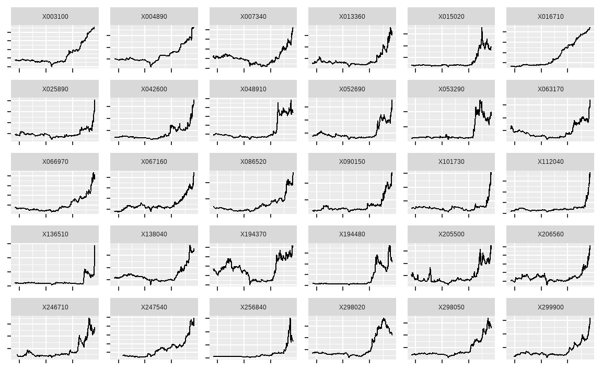
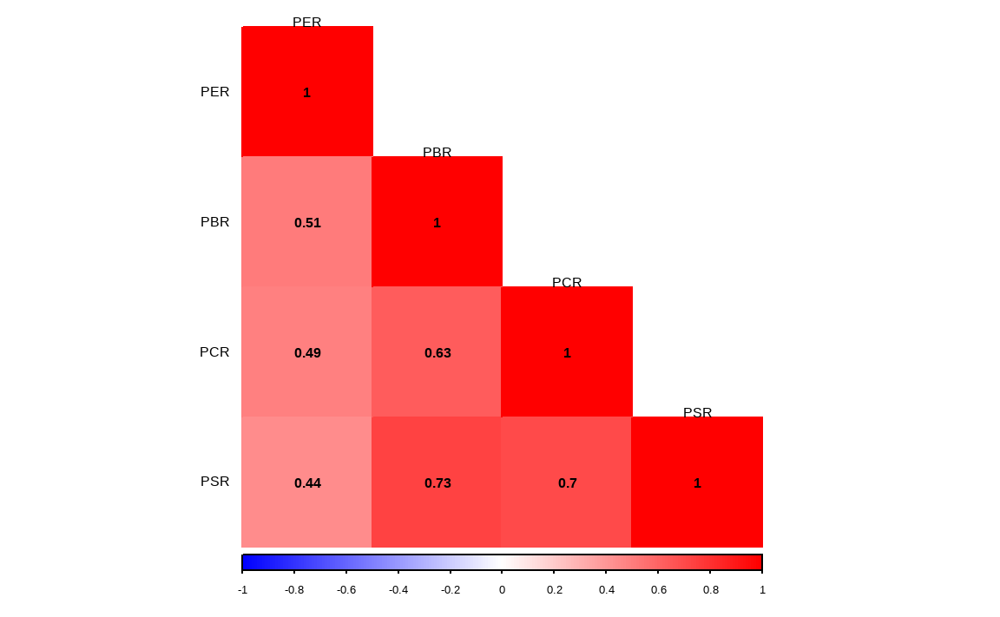

Chapter 9 퀀트 전략을 이용한 종목선정 (기본)
투자에 필요한 주가, 재무제표, 가치지표 데이터가 준비되었다면 퀀트 전략을 활용해 투자하고자 하는 종목을 선정해야 합니다. 퀀트 투자는 크게 포트폴리오 운용 전략과 트레이딩 전략으로 나눌 수 있습니다. 포트폴리오 운용 전략은 과거 주식 시장을 분석해 좋은 주식의 기준을 찾아낸 후 해당 기준에 만족하는 종목을 매수하거나, 이와 반대에 있는 나쁜 주식을 공매도하기도 합니다. 투자의 속도가 느리며, 다수의 종목을 하나의 포트폴리오로 구성해 운용하는 특징이 있습니다. 반면 트레이딩 전략은 단기간에 발생되는 주식의 움직임을 연구한 후 예측해 매수 혹은 매도하는 전략입니다. 투자의 속도가 빠르며 소수의 종목을 대상으로 합니다.
| 기준 | 포트폴리오 운용 전략 | 트레이딩 전략 |
|---|---|---|
| 투자철학 | 규칙에 기반한 투자 | 규칙에 기반한 투자 |
| 투자목적 | 좋은 주식을 매수 | 좋은 시점을 매수 |
| 학문적 기반 | 경제학, 통계학 등 | 통계학, 공학, 정보처리 등 |
| 투자의 속도 | 느림 | 빠름 |
이 중 이 책에서는 포트폴리오에 기반한 운용 전략에 대해 다룹니다. 주식의 수익률에 영향을 미치는 요소를 팩터(Factor)라고 합니다. 즉 팩터의 강도가 양인 종목들로 구성한 포트폴리오는 향후 수익률이 높을 것으로 예상되며, 팩터의 강도가 음인 종목들로 구성한 포트폴리오는 반대로 향후 수익률이 낮을 것으로 예상됩니다.
팩터에 대한 연구는 학자들에 의해 오랫동안 진행되어 왔지만, 일반 투자자들이 이러한 논문을 모두 찾아보고 연구하기는 사실상 불가능에 가깝습니다. 그러나 최근에는 스마트 베타라는 이름으로 팩터 투자가 대중화되고 있습니다. 최근 유행하고 있는 스마트 베타 ETF는 팩터를 기준으로 포트폴리오를 구성한 상품으로서, 학계나 실무에서 검증된 팩터 전략을 기반으로 합니다.
해당 상품들의 웹사이트나 투자설명서에는 종목 선정 기준에 대해 자세히 나와 있으므로 스마트 베타 ETF에 나와 있는 투자 전략을 자세히 분석하는 것만으로도 훌륭한 퀀트 투자 전략을 만들 수 있습니다.
그림 9.1: 스마트베타 ETF 전략 예시
이 CHAPTER에서는 투자에 많이 활용되는 기본적인 팩터에 대해 알아보고, 우리가 구한 데이터를 바탕으로 각 팩터별 투자 종목을 선택하는 방법을 알아보겠습니다.
9.1 베타 이해하기
투자자들이라면 누구나 한 번은 베타(Beta)라는 용어를 들어봤을 것입니다. 기본적으로 주식시장의 움직임은 개별 주식의 수익률에 가장 크게 영향을 주는 요소일 수밖에 없습니다. 아무리 좋은 주식도 주식시장이 폭락한다면 같이 떨어지며, 아무리 나쁜 주식도 주식시장이 상승한다면 대부분 같이 오르기 마련입니다.
개별 주식이 전체 주식시장의 변동에 반응하는 정도를 나타낸 값이 베타입니다. 베타가 1이라는 뜻은 주식시장과 움직임이 정확히 같다는 뜻으로서 시장 그 자체를 나타냅니다. 베타가 1.5라는 뜻은 주식시장이 수익률이 +1%일 때 개별 주식의 수익률은 +1.5% 움직이며, 반대로 주식시장의 수익률이 -1%일 때 개별 주식의 수익률은 -1.5% 움직인다는 뜻입니다. 반면 베타가 0.5라면 주식시장 수익률의 절반 정도만 움직이게 됩니다.
| 베타 | 주식시장이 +1% 일 경우 | 주식시장이 -1% 일 경우 |
|---|---|---|
| 0.5 | +0.5% | -0.5% |
| 1.0 | +1.0% | -1.0% |
| 1.5 | +1.5% | -1.5% |
이처럼 베타가 큰 주식은 주식시장보다 수익률의 움직임이 크며, 반대로 베타가 낮은 주식은 주식시장보다 수익률의 움직임이 작습니다. 따라서 일반적으로 상승장이 기대될 때는 베타가 큰 주식에, 하락장이 기대될 때는 베타가 낮은 주식에 투자하는 것이 좋습니다.
주식시장에서 베타는 통계학의 회귀분석모형에서 기울기를 나타내는 베타와 정확히 의미가 같습니다. 회귀분석모형은 \(y = a + bx\) 형태로 나타나며, 회귀계수인 \(b\)는 \(x\)의 변화에 따른 \(y\)의 변화의 기울기입니다. 이를 주식에 적용한 모형이 자산가격결정모형(CAPM: Capital Asset Pricing Model)(Sharpe 1964)이며, 그 식은 다음과 같습니다.
\[회귀분석모형: y = a + bx\] \[자산가격결정모형: R_i = R_f + \beta_i\times[R_m - R_f]\]
먼저 회귀분석모형의 상수항인 \(a\)에 해당하는 부분은 무위험 수익률을 나타내는 \(R_f\)입니다. 독립변수인 \(x\)에 해당하는 부분은 무위험 수익률 대비 주식 시장의 초과 수익률을 나타내는 시장위험 프리미엄인 \(R_m - R_f\)입니다. 종속변수인 \(y\)에 해당하는 부분은 개별주식의 수익률을 나타내는 \(R_i\)이며, 최종적으로 회귀계수인 \(b\)에 해당하는 부분은 개별 주식의 베타입니다.
| 구분 | 회귀분석모형 | 자산가격결정모형 |
|---|---|---|
| 상수항 | a | \(R_f\) (무위험 수익률) |
| 독립변수 | x | \(R_m - R_f\) (시장위험 프리미엄) |
| 종속변수 | y | \(R_i\) (개별주식의 수익률) |
| 회귀계수 | b | \(\beta_i\) (개별주식의 베타) |
통계학에서 회귀계수는 \(\beta = \frac{cov(x,y)}{\sigma_x^2}\) 형태로 구할 수 있으며, \(x\)와 \(y\)에 각각 시장수익률과 개별주식의 수익률을 대입할 경우 개별주식의 베타는 \(\beta_i= \rho(i,m) \times\frac{\sigma_i}{\sigma_m}\) 형태로 구할 수 있습니다. 그러나 이러한 수식을 모르더라도 R에서는 간단히 베타를 구할 수 있습니다.
9.1.1 베타 계산하기
베타를 구하는 방법을 알아보기 위해 주식시장에 대한 대용치로 KOSPI 200 ETF, 개별주식으로는 전통적 고베타주인 증권주를 이용하겠습니다.
library(quantmod)
library(PerformanceAnalytics)
library(magrittr)
symbols = c('102110.KS', '039490.KS')
getSymbols(symbols)## [1] "102110.KS" "039490.KS"prices = do.call(cbind,
lapply(symbols, function(x)Cl(get(x))))
ret = Return.calculate(prices)
ret = ret['2016-01::2018-12']- KOSPI 200 ETF인 TIGER 200(102110.KS), 증권주인 키움증권(039490.KS)의 티커를 입력합니다.
getSymbols()함수를 이용하여 해당 티커들의 데이터를 다운로드 받습니다.lapply()함수 내에Cl()과get()함수를 사용하여 종가에 해당하는 데이터만 추출하며, 리스트 형태의 데이터를 열의 형태로 묶어주기 위해do.call()함수와cbind()함수를 사용해 줍니다.Return.calculate()함수를 통해 수익률을 계산해 줍니다.- xts 형식의 데이터는 대괄호 속에 [‘시작일자::종료일자’]와 같은 형태로, 원하는 날짜를 편리하게 선택할 수 있으며, 위에서는 2016년 1월부터 2018년 12월 까지 데이터를 선택합니다.
rm = ret[, 1]
ri = ret[, 2]
reg = lm(ri ~ rm)
summary(reg)##
## Call:
## lm(formula = ri ~ rm)
##
## Residuals:
## Min 1Q Median 3Q Max
## -0.06890 -0.01296 -0.00171 0.01082 0.09541
##
## Coefficients:
## Estimate Std. Error t value Pr(>|t|)
## (Intercept) 0.000400 0.000728 0.55 0.58
## rm 1.764722 0.091131 19.36 <2e-16 ***
## ---
## Signif. codes: 0 '***' 0.001 '**' 0.01 '*' 0.05 '.' 0.1 ' ' 1
##
## Residual standard error: 0.0196 on 721 degrees of freedom
## (결측으로 인하여 8개의 관측치가 삭제되었습니다.)
## Multiple R-squared: 0.342, Adjusted R-squared: 0.341
## F-statistic: 375 on 1 and 721 DF, p-value: <2e-16증권주를 대상으로 베타를 구하기 위한 회귀분석을 실시합니다. 자산가격결정모형의 수식인 \(R_i = R_f + \beta_i \times [R_m - R_f]\) 에서 편의를 위해 무위험 수익률인 \(R_f\)를 0으로 가정하면, \(R_i = \beta_i \times R_m\)의 형태로 나타낼 수 있습니다. 이 중 \(R_m\)는 독립변수인 주식시장의 수익률을 의미하고, \(R_i\)는 종속변수인 개별 주식의 수익률을 의미합니다.
- 독립변수는 첫 번째 열인 KOSPI 200 ETF의 수익률을 선택하며, 종속변수는 두번째 열인 증권주의 수익률을 선택합니다.
lm()함수를 통해 손쉽게 선형회귀분석을 실시할 수 있으며, 회귀분석의 결과를 reg 변수에 저장합니다.summary()함수는 데이터의 요약 정보를 나타내며, 해당 예시에서는 회귀분석 결과에 대한 정보를 보여줍니다.
회귀분석의 결과 중 가장 중요한 부분은 계수를 나타내는 Coefficients입니다. Intercept는 회귀분석의 상수항에 해당하는 부분으로서, 값이 거의 0에 가깝고 t값 또한 매우 작아 유의하지 않음이 보입니다. 우리가 원하는 베타에 해당하는 부분 은 \(x\)의 Estimate로서, 베타값이 1.76으로 증권주의 특성인 고베타주임이 확인되며, t값 또한 19.36로 매우 유의한 결과입니다. 조정된 결정계수(Adjusted R-square)는 0.34를 보입니다.
9.1.2 베타 시각화
이제 구해진 베타를 그림으로 표현해보겠습니다.
plot(as.numeric(rm), as.numeric(ri), pch = 4, cex = 0.3,
xlab = "KOSPI 200", ylab = "Individual Stock",
xlim = c(-0.02, 0.02), ylim = c(-0.02, 0.02))
abline(a = 0, b = 1, lty = 2)
abline(reg, col = 'red')
plot()함수를 통해 그림을 그려주며, x축과 y축에 주식시장 수익률과 개별 주식 수익률을 입력합니다. pch는 점들의 모양을, cex는 점들의 크기를 나타내며, xlab과 ylab은 각각 x축과 y축에 들어갈 문구를 나타냅니다. xlim과 ylim은 x 축과 y축의 최소 및 최대 범위를 지정해줍니다.- 첫번째
abline()에서 a는 상수, b는 직선의 기울기, lty는 선의 유형을 나타냅니다. 이를 통해 기울기, 즉 베타가 1일 경우의 선을 점선으로 표현합니다. - 두번째
abline()에 회귀분석 결과를 입력해주면 자동적으로 회귀식을 그려줍니다.
검은색의 점선이 기울기가 1인 경우이며, 주황색의 직선이 증권주의 회귀분석결과를 나타냅니다. 기울기가 1보다 훨씬 가파름이 확인되며, 즉 베타가 1보다 크다는 사실을 알 수 있습니다.
9.2 저변동성 전략
금융 시장에서 변동성은 수익률이 움직이는 정도로서, 일반적으로 표준편차가 사용됩니다. 표준편차는 자료가 평균을 중심으로 얼마나 퍼져 있는지를 나타내는 수치로서, 수식은 다음과 같습니다.
\[\sigma = \sqrt{\frac{\sum_{i=1}^{n}{(x_i - \bar{x})^2}}{n-1}}\]
관측값의 개수가 적을 경우에는 수식에 대입해 계산하는 것이 가능하지만, 관측값이 수백 혹은 수천 개로 늘어날 경우 컴퓨터를 이용하지 않고 계산하기는 사실상 불가능합니다. R에서는 복잡한 계산 과정 없이 sd() 함수를 이용해 간단하게 표준편차를 계산할 수 있습니다.
example = c(85, 76, 73, 80, 72)
sd(example)## [1] 5.357개별 주식의 표준편차를 측정할 때는 주식의 가격이 아닌 수익률로 계산해야 합니다. 수익률의 표준편차가 크면 수익률이 위아래로 많이 움직여 위험한 종목으로 여겨집니다. 반면 표준편차가 작으면 수익률의 움직임이 적어 상대적으로 안전한 종목으로 여겨집니다.
전통적 금융 이론에서는 수익률의 변동성이 클수록 위험이 크고, 이런 위험에 대한 보상으로 기대수익률이 높아야 한다고 보았습니다. 따라서 고변동성 종목의 기대수익률이 크고, 저변동성 종목의 기대수익률이 낮은 고위험 고수익이 당연한 믿음이었습니다. 그러나 현실에서는 오히려 변동성이 낮은 종목들의 수익률이 변동성이 높은 종목들의 수익률보다 높은, 저변동성 효과가 발견되고 있습니다. 이러한 저변동성 효과가 발생하는 원인으로는 여러 가설이 있습니다.
투자자들은 대체로 자신의 능력을 과신하는 경향이 있으며, 복권과 같이 큰 수익을 가져다 주는 고변동성 주식을 선호하는 경향이 있습니다. 이러한 결과로 고변동성 주식은 과대 평가되어 수익률이 낮은 반면, 과소 평가된 저변동성 주식들은 높은 수익률을 보이게 됩니다. (Brunnermeier and Parker 2005)
대부분 기관투자가들이 레버리지 투자가 되지 않는 상황에서, 벤치마크 대비 높은 성과를 얻기 위해 고변동성 주식에 투자하는 경향이 있으며, 이 또한 고변동성 주식이 과대 평가되는 결과로 이어집니다. (Baker, Bradley, and Wurgler 2011)
시장의 상승과 하락이 반복됨에 따라 고변동성 주식이 변동성 손실(Volatility Drag)로 인해 수익률이 하락하게 되는 이유도 있습니다. (Sefton et al. 2011)
주식의 위험은 변동성뿐만 아니라 베타 등 여러 지표로도 측정할 수 있습니다. 저변동성 효과와 비슷하게 고유변동성이 낮은 주식의 수익률이 높은 저고유변동성 효과(Ang et al. 2009), 베타가 낮은 주식의 수익률이 오히려 높은 저베타 효과(Baker, Bradley, and Taliaferro 2014)도 발견되고 있으며, 이러한 효과들을 합쳐 저위험 효과라고 부르기도 합니다.
9.2.1 저변동성 포트폴리오 구하기: 일간 기준
먼저 최근 1년 일간 수익률 기준 변동성이 낮은 30종목을 선택하겠습니다.
library(stringr)
library(xts)
library(PerformanceAnalytics)
library(magrittr)
library(ggplot2)
library(dplyr)
KOR_price = read.csv('data/KOR_price.csv', row.names = 1,
stringsAsFactors = FALSE) %>% as.xts()
KOR_ticker = read.csv('data/KOR_ticker.csv', row.names = 1,
stringsAsFactors = FALSE)
KOR_ticker$'종목코드' =
str_pad(KOR_ticker$'종목코드', 6, 'left', 0)
ret = Return.calculate(KOR_price)
std_12m_daily = xts::last(ret, 252) %>% apply(., 2, sd) %>%
multiply_by(sqrt(252))- 저장해둔 가격 정보와 티커 정보를 불러옵니다. 가격 정보는
as.xts()함수를 통해 xts 형태로 변경합니다. Return.calculate()함수를 통해 수익률을 구합니다.last()함수는 마지막 n개 데이터를 선택해주는 함수이며, 1년 영업일 기준인 252개 데이터를 선택합니다. dplyr 패키지의last()함수와 이름이 같으므로,xts::last()형식을 통해 xts 패키지의 함수임을 정의해줍니다.apply()함수를 통해 sd 즉 변동성을 계산해주며, 연율화를 해주기 위해multiply_by()함수를 통해 \(\sqrt{252}\)를 곱해줍니다.
std_12m_daily %>%
data.frame() %>%
ggplot(aes(x = (`.`))) +
geom_histogram(binwidth = 0.01) +
annotate("rect", xmin = -0.02, xmax = 0.02,
ymin = 0,
ymax = sum(std_12m_daily == 0, na.rm = TRUE) * 1.1,
alpha=0.3, fill="red") +
xlab(NULL)
std_12m_daily[std_12m_daily == 0] = NA
변동성을 히스토그램으로 나타내보면, 0에 위치하는 종목들이 다수 있습니다. 해당 종목들은 최근 1년간 거래정지로 인해 가격이 변하지 않았고, 이로 인해 변동성이 없는 종목들입니다. 해당 종목들은 NA로 처리해줍니다.
std_12m_daily[rank(std_12m_daily) <= 30]## X033780 X012750 X007310 X016710 X034310 X001720 X005180 X267980 X029960 X002960
## 0.1393 0.1731 0.1665 0.1858 0.1844 0.1832 0.1532 0.1709 0.1715 0.1736
## X072710 X000480 X002810 X001270 X001070 X092130 X015360 X018120 X130580 X034590
## 0.1522 0.1546 0.1810 0.1671 0.1850 0.1413 0.1715 0.1063 0.1882 0.1240
## X040420 X078000 X036670 X016670 X004450 X088910 X000850 X014100 X084670 X010400
## 0.1330 0.1832 0.1900 0.1425 0.1289 0.1861 0.1806 0.1564 0.1803 0.1919std_12m_daily[rank(std_12m_daily) <= 30] %>%
data.frame() %>%
ggplot(aes(x = rep(1:30), y = `.`)) +
geom_col() +
xlab(NULL)
rank() 함수를 통해 순위를 구할 수 있으며, R은 기본적으로 오름차순 즉 가장 낮은값의 순위가 1이 됩니다. 따라서 변동성이 낮을수록 높은 순위가 되며, 30위 이하의 순위를 선택하면 변동성이 낮은 30종목이 선택됩니다. 또한 ggplot() 함수를 이용해 해당 종목들의 변동성을 확인해볼 수도 있습니다.
이번에는 해당 종목들의 티커 및 종목명을 확인하겠습니다.
invest_lowvol = rank(std_12m_daily) <= 30
KOR_ticker[invest_lowvol, ] %>%
select(`종목코드`, `종목명`) %>%
mutate(`변동성` = round(std_12m_daily[invest_lowvol], 4))## 종목코드 종목명 변동성
## 35 033780 KT&G 0.1393
## 109 012750 에스원 0.1731
## 176 007310 오뚜기 0.1665
## 365 016710 대성홀딩스 0.1858
## 393 034310 NICE 0.1844
## 415 001720 신영증권 0.1832
## 439 005180 빙그레 0.1532
## 453 267980 매일유업 0.1709
## 524 029960 코엔텍 0.1715
## 638 002960 한국쉘석유 0.1736
## 647 072710 농심홀딩스 0.1522
## 659 000480 조선내화 0.1546
## 763 002810 삼영무역 0.1810
## 845 001270 부국증권 0.1671
## 881 001070 대한방직 0.1850
## 885 092130 이크레더블 0.1413
## 933 015360 예스코홀딩스 0.1715
## 991 018120 진로발효 0.1063
## 1238 130580 나이스디앤비 0.1882
## 1415 034590 인천도시가스 0.1240
## 1467 040420 정상제이엘에스 0.1330
## 1559 078000 텔코웨어 0.1832
## 1639 036670 KCI 0.1900
## 1645 016670 인피니티엔티 0.1425
## 1685 004450 삼화왕관 0.1289
## 1814 088910 동우팜투테이블 0.1861
## 1820 000850 화천기공 0.1806
## 1902 014100 메디앙스 0.1564
## 2010 084670 동양고속 0.1803
## 2034 010400 우진아이엔에스 0.1919티커와 종목명, 연율화 변동성을 확인할 수 있습니다.
9.2.2 저변동성 포트폴리오 구하기: 주간 기준
이번에는 일간 변동성이 아닌 주간 변동성을 기준으로 저변동성 종목을 선택하겠습니다.
std_12m_weekly = xts::last(ret, 252) %>%
apply.weekly(Return.cumulative) %>%
apply(., 2, sd) %>% multiply_by(sqrt(52))
std_12m_weekly[std_12m_weekly == 0] = NA먼저 최근 252일 수익률울 선택한 후, apply.weekly() 함수 내 Return.cumulative를 입력해 주간 수익률을 계산하며, 연율화를 위해 연간 주수에 해당하는 \(\sqrt{52}\)를 곱해줍니다. 이 외에도 apply.monthly(), apply.yearly() 함수 등으로 일간 수익률을 월간, 연간 수익률 등으로 변환할 수 있습니다. 그 후 과정은 위와 동일합니다.
std_12m_weekly[rank(std_12m_weekly) <= 30]## X377300 X033780 X012750 X007310 X348370 X381970 X383800 X034310 X001720 X005180
## 0.10932 0.12547 0.13112 0.13999 0.10304 0.11925 0.13932 0.15361 0.16768 0.16211
## X267980 X071320 X029960 X072710 X000480 X377450 X001070 X092130 X015360 X018120
## 0.16839 0.16525 0.17149 0.14413 0.15789 0.06138 0.14791 0.14595 0.16962 0.09998
## X130580 X034590 X376290 X040420 X159010 X078000 X016670 X004450 X114840 X376180
## 0.16687 0.10322 0.10085 0.15292 0.11462 0.15074 0.14976 0.12987 0.14825 0.10024invest_lowvol_weekly = rank(std_12m_weekly) <= 30
KOR_ticker[invest_lowvol_weekly, ] %>%
select(`종목코드`, `종목명`) %>%
mutate(`변동성` =
round(std_12m_weekly[invest_lowvol_weekly], 4))## 종목코드 종목명 변동성
## 13 377300 카카오페이 0.1093
## 35 033780 KT&G 0.1255
## 109 012750 에스원 0.1311
## 176 007310 오뚜기 0.1400
## 218 348370 엔켐 0.1030
## 241 381970 케이카 0.1193
## 373 383800 LX홀딩스 0.1393
## 393 034310 NICE 0.1536
## 415 001720 신영증권 0.1677
## 439 005180 빙그레 0.1621
## 453 267980 매일유업 0.1684
## 509 071320 지역난방공사 0.1652
## 524 029960 코엔텍 0.1715
## 647 072710 농심홀딩스 0.1441
## 659 000480 조선내화 0.1579
## 847 377450 리파인 0.0614
## 881 001070 대한방직 0.1479
## 885 092130 이크레더블 0.1460
## 933 015360 예스코홀딩스 0.1696
## 991 018120 진로발효 0.1000
## 1238 130580 나이스디앤비 0.1669
## 1415 034590 인천도시가스 0.1032
## 1419 376290 씨유테크 0.1008
## 1467 040420 정상제이엘에스 0.1529
## 1531 159010 아스플로 0.1146
## 1559 078000 텔코웨어 0.1507
## 1645 016670 인피니티엔티 0.1498
## 1685 004450 삼화왕관 0.1299
## 1745 114840 아이패밀리에스씨 0.1483
## 2054 376180 피코그램 0.1002주간 수익률의 변동성이 낮은 30종목을 선택해 종목코드, 종목명, 연율화 변동성을 확인합니다.
intersect(KOR_ticker[invest_lowvol, '종목명'],
KOR_ticker[invest_lowvol_weekly, '종목명'])## [1] "KT&G" "에스원" "오뚜기" "NICE"
## [5] "신영증권" "빙그레" "매일유업" "코엔텍"
## [9] "농심홀딩스" "조선내화" "대한방직" "이크레더블"
## [13] "예스코홀딩스" "진로발효" "나이스디앤비" "인천도시가스"
## [17] "정상제이엘에스" "텔코웨어" "인피니티엔티" "삼화왕관"intersect() 함수를 통해 일간 변동성 기준과 주간 변동성 기준 모두에 포함되는 종목을 찾을 수 있습니다.
9.3 모멘텀 전략
투자에서 모멘텀이란 주가 혹은 이익의 추세로서, 상승 추세의 주식은 지속적으로 상승하며 하락 추세의 주식은 지속적으로 하락하는 현상을 말합니다. 모멘텀 현상이 발생하는 가장 큰 원인은 투자자들의 스스로에 대한 과잉 신뢰 때문입니다. 사람들은 자신의 판단을 지지하는 정보에 대해서는 과잉 반응하고, 자신의 판단을 부정하는 정보에 대해서는 과소 반응하는 경향이 있습니다. 이러한 투자자들의 비합리성으로 인해모멘텀 현상이 생겨나게 됩니다.
모멘텀의 종류는 크게 기업의 이익에 대한 추세를 나타내는 이익 모멘텀(Rendleman Jr, Jones, and Latane 1982)과, 주가의 모멘텀에 대한 가격 모멘텀이 있습니다. 또한 가격 모멘텀도 1주일(Lehmann 1990) 혹은 1개월 이하(Jegadeesh 1990)를 의미하는 단기 모멘텀, 3개월에서 12개월을 의미하는 중기 모멘텀(Jegadeesh and Titman 1993), 3년에서 5년을 의미하는 장기 모멘텀(De Bondt and Thaler 1985)이 있으며, 이 중에서도 3개월에서 12개월 가격 모멘텀을 흔히 모멘텀이라고 합니다.
9.3.1 모멘텀 포트폴리오 구하기: 12개월 모멘텀
먼저 최근 1년 동안의 수익률이 높은 30종목을 선택하겠습니다.
library(stringr)
library(xts)
library(PerformanceAnalytics)
library(magrittr)
library(dplyr)
KOR_price = read.csv('data/KOR_price.csv', row.names = 1,
stringsAsFactors = FALSE) %>% as.xts()
KOR_ticker = read.csv('data/KOR_ticker.csv', row.names = 1,
stringsAsFactors = FALSE)
KOR_ticker$'종목코드' =
str_pad(KOR_ticker$'종목코드', 6, 'left', 0)
ret = Return.calculate(KOR_price) %>% xts::last(252)
ret_12m = ret %>% sapply(., function(x) {
prod(1+x) - 1
})- 가격 정보와 티커 정보를 불러온 후
Return.calculate()함수를 통해 수익률을 계산합니다. 그 후 최근 252일 수익률을 선택합니다. sapply()함수 내부에prod()함수를 이용해 각 종목의 누적수익률을 계산해줍니다.
ret_12m[rank(-ret_12m) <= 30]## X066970 X112040 X298050 X052690 X086520 X256840 X194480 X299900 X246710 X307750
## 4.537 6.961 3.681 4.639 3.545 5.255 11.753 6.674 4.779 2.974
## X206560 X138490 X130660 X063170 X101730 X291230 X048910 X042600 X004830 X205500
## 3.808 3.086 3.605 5.861 8.322 3.082 4.272 5.673 4.658 4.275
## X013360 X053290 X088390 X090150 X039240 X038620 X015020 X136510 X181340 X025890
## 5.991 6.266 2.977 4.605 3.473 4.064 5.404 14.348 3.418 4.495rank() 함수를 통해 순위를 구합니다. 모멘텀의 경우 높을수록 좋은 내림차순으로 순위를 계산해야 하므로 수익률 앞에 마이너스(-)를 붙여줍니다. 12개월 누적수익률이 높은 종목들이 선택됨이 확인됩니다.
invest_mom = rank(-ret_12m) <= 30
KOR_ticker[invest_mom, ] %>%
select(`종목코드`, `종목명`) %>%
mutate(`수익률` = round(ret_12m[invest_mom], 4))## 종목코드 종목명 수익률
## 57 066970 엘앤에프 4.537
## 61 112040 위메이드 6.961
## 117 298050 효성첨단소재 3.681
## 132 052690 한전기술 4.639
## 156 086520 에코프로 3.545
## 212 256840 한국비엔씨 5.255
## 224 194480 데브시스터즈 11.753
## 236 299900 위지윅스튜디오 6.674
## 364 246710 티앤알바이오팹 4.779
## 388 307750 국전약품 2.974
## 414 206560 덱스터 3.808
## 424 138490 코오롱플라스틱 3.086
## 467 130660 한전산업 3.605
## 468 063170 서울옥션 5.861
## 504 101730 위메이드맥스 8.322
## 517 291230 엔피 3.082
## 531 048910 대원미디어 4.272
## 572 042600 새로닉스 5.673
## 610 004830 덕성 4.658
## 642 205500 액션스퀘어 4.275
## 667 013360 일성건설 5.991
## 731 053290 NE능률 6.266
## 840 088390 이녹스 2.977
## 954 090150 광진윈텍 4.605
## 981 039240 경남스틸 3.473
## 1017 038620 위즈코프 4.064
## 1167 015020 이스타코 5.404
## 1233 136510 쎄미시스코 14.348
## 1341 181340 이즈미디어 3.418
## 1865 025890 한국주강 4.495티커와 종목명, 누적수익률을 확인할 수 있습니다.
9.3.2 모멘텀 포트폴리오 구하기: 위험조정 수익률
단순히 과거 수익률로만 모멘텀 종목을 선택하면 각종 테마나 이벤트에 따른 급등으로 인해 변동성이 지나치게 높은 종목이 있을 수도 있습니다. 누적수익률을 변동성으로 나누어 위험을 고려해줄 경우, 이러한 종목은 제외되며 상대적으로 안정적인 모멘텀 종목을 선택할 수 있습니다.
ret = Return.calculate(KOR_price) %>% xts::last(252)
ret_12m = ret %>% sapply(., function(x) {
prod(1+x) - 1
})
std_12m = ret %>% apply(., 2, sd) %>% multiply_by(sqrt(252))
sharpe_12m = ret_12m / std_12m- 최근 1년에 해당하는 수익률을 선택합니다.
sapply()와prod()함수를 이용해 분자에 해당하는 누적수익률을 계산합니다.apply()와multiply_by()이용해 분모에 해당하는 연율화 변동성을 계산합니다.- 수익률을 변동성으로 나누어 위험조정 수익률을 계산해줍니다.
이를 통해 수익률이 높으면서 변동성이 낮은 종목을 선정할 수 있습니다.
invest_mom_sharpe = rank(-sharpe_12m) <= 30
KOR_ticker[invest_mom_sharpe, ] %>%
select(`종목코드`, `종목명`) %>%
mutate(`수익률` = round(ret_12m[invest_mom_sharpe], 2),
`변동성` = round(std_12m[invest_mom_sharpe], 2),
`위험조정 수익률` =
round(sharpe_12m[invest_mom_sharpe], 2)) %>%
as_tibble() %>%
print(n = Inf)## # A tibble: 30 x 5
## 종목코드 종목명 수익률 변동성 `위험조정 수익률`
## <chr> <chr> <dbl> <dbl> <dbl>
## 1 247540 에코프로비엠 2.9 0.46 6.27
## 2 066970 엘앤에프 4.54 0.67 6.79
## 3 112040 위메이드 6.96 0.91 7.66
## 4 138040 메리츠금융지주 2.71 0.38 7.04
## 5 298050 효성첨단소재 3.68 0.6 6.1
## 6 052690 한전기술 4.64 0.71 6.58
## 7 067160 아프리카TV 2.65 0.49 5.37
## 8 298020 효성티앤씨 2.87 0.61 4.69
## 9 086520 에코프로 3.54 0.62 5.74
## 10 256840 한국비엔씨 5.25 1.13 4.64
## 11 194480 데브시스터즈 11.8 1.14 10.3
## 12 299900 위지윅스튜디오 6.67 0.6 11.2
## 13 246710 티앤알바이오팹 4.78 0.94 5.06
## 14 016710 대성홀딩스 0.96 0.19 5.15
## 15 007340 디티알오토모티브 1.82 0.33 5.54
## 16 206560 덱스터 3.81 0.68 5.57
## 17 063170 서울옥션 5.86 0.75 7.82
## 18 101730 위메이드맥스 8.32 0.96 8.63
## 19 048910 대원미디어 4.27 0.88 4.84
## 20 042600 새로닉스 5.67 0.96 5.93
## 21 003100 선광 1.31 0.25 5.16
## 22 205500 액션스퀘어 4.28 0.86 5
## 23 013360 일성건설 5.99 0.94 6.39
## 24 194370 제이에스코퍼레이션 2.82 0.58 4.85
## 25 004890 동일산업 1.05 0.2 5.24
## 26 053290 NE능률 6.27 1.05 5.95
## 27 090150 광진윈텍 4.61 0.88 5.21
## 28 015020 이스타코 5.4 1.08 5
## 29 136510 쎄미시스코 14.4 1.16 12.4
## 30 025890 한국주강 4.49 0.78 5.75티커와 종목명, 누적수익률, 변동성, 위험조정 수익률을 확인할 수 있습니다.
intersect(KOR_ticker[invest_mom, '종목명'],
KOR_ticker[invest_mom_sharpe, '종목명'])## [1] "엘앤에프" "위메이드" "효성첨단소재" "한전기술"
## [5] "에코프로" "한국비엔씨" "데브시스터즈" "위지윅스튜디오"
## [9] "티앤알바이오팹" "덱스터" "서울옥션" "위메이드맥스"
## [13] "대원미디어" "새로닉스" "액션스퀘어" "일성건설"
## [17] "NE능률" "광진윈텍" "이스타코" "쎄미시스코"
## [21] "한국주강"intersect() 함수를 통해 단순 수익률 및 위험조정 수익률 기준 모두에 포함되는 종목을 찾을 수 있습니다. 다음은 위험조정 수익률 상위 30종목의 가격 그래프입니다.
library(xts)
library(tidyr)
library(ggplot2)
KOR_price[, invest_mom_sharpe] %>%
fortify.zoo() %>%
gather(ticker, price, -Index) %>%
ggplot(aes(x = Index, y = price)) +
geom_line() +
facet_wrap(. ~ ticker, scales = 'free') +
xlab(NULL) +
ylab(NULL) +
theme(axis.text.x=element_blank(),
axis.text.y=element_blank())
9.4 밸류 전략
가치주 효과란 내재 가치 대비 낮은 가격의 주식(저PER, 저PBR 등)이, 내재 가치 대비 비싼 주식보다 수익률이 높은 현상(Basu 1977)을 뜻합니다. 가치 효과가 발생하는 원인에 대한 이론은 다음과 같습니다.
- 위험한 기업은 시장에서 상대적으로 낮은 가격에 거래되며, 이러한 위험을 감당하는 대가로 수익이 발생합니다.
- 투자자들의 성장주에 대한 과잉 반응으로 인해 가치주는 시장에서 소외되며, 제자리를 찾아가는 과정에서 수익이 발생합니다.
기업의 가치를 나타내는 지표는 굉장히 많지만, 일반적으로 PER, PBR, PCR, PSR이 많이 사용됩니다.
9.4.1 밸류 포트폴리오 구하기: 저PBR
먼저 기업의 가치 여부를 판단할 때 가장 많이 사용되는 지표인 PBR을 이용한 포트폴리오를 구성하겠습니다.
library(stringr)
library(ggplot2)
library(dplyr)
KOR_value = read.csv('data/KOR_value.csv', row.names = 1,
stringsAsFactors = FALSE)
KOR_ticker = read.csv('data/KOR_ticker.csv', row.names = 1,
stringsAsFactors = FALSE)
KOR_ticker$'종목코드' =
str_pad(KOR_ticker$'종목코드', 6, 'left', 0)
invest_pbr = rank(KOR_value$PBR) <= 30
KOR_ticker[invest_pbr, ] %>%
select(`종목코드`, `종목명`) %>%
mutate(`PBR` = round(KOR_value[invest_pbr, 'PBR'], 4))## 종목코드 종목명 PBR
## 26 015760 한국전력 0.2103
## 119 088350 한화생명 0.2164
## 127 001040 CJ 0.1853
## 145 000880 한화 0.1308
## 320 003380 하림지주 0.2451
## 385 009970 영원무역홀딩스 0.2483
## 395 012630 HDC 0.1444
## 469 032190 다우데이타 0.1599
## 509 071320 지역난방공사 0.2629
## 534 058650 세아홀딩스 0.1628
## 589 003300 한일홀딩스 0.2173
## 688 001940 KISCO홀딩스 0.2429
## 743 036530 SNT홀딩스 0.1840
## 789 092230 KPX홀딩스 0.2095
## 797 002030 아세아 0.1757
## 822 005720 넥센 0.1298
## 855 008060 대덕 0.1893
## 1329 005990 매일홀딩스 0.2317
## 1338 054800 아이디스홀딩스 0.2201
## 1524 009200 무림페이퍼 0.1758
## 1530 004840 DRB동일 0.2373
## 1537 005010 휴스틸 0.2609
## 1767 012320 경동인베스트 0.1982
## 1811 101330 모베이스 0.2350
## 1820 000850 화천기공 0.2659
## 1882 000590 CS홀딩스 0.2531
## 2056 025530 SJM홀딩스 0.2241
## 2083 024830 세원물산 0.2534
## 2120 000760 이화산업 0.2680
## 2227 141020 포티스 0.2642가치지표들을 저장한 데이터와 티커 데이터를 불러오며, rank()를 통해 PBR이 낮은 30종목을 선택합니다. 그 후 종목코드와 종목명, PBR을 확인합니다. 홀딩스 등 지주사가 그 특성상 저PBR 포트폴리오에 많이 구성되어 있습니다.
9.4.2 각 지표 결합하기
저PBR 하나의 지표만으로도 우수한 성과를 거둘 수 있음은 오랜 기간 증명되고 있습니다. 그러나 저평가 주식이 계속해서 저평가에 머무르는 가치 함정에 빠지지 않으려면 여러 지표를 동시에 볼 필요도 있습니다.
library(corrplot)
rank_value = KOR_value %>%
mutate_all(list(~min_rank(.)))
cor(rank_value, use = 'complete.obs') %>%
round(., 2) %>%
corrplot(method = 'color', type = 'lower',
addCoef.col = 'black', number.cex = 1,
tl.cex = 1, tl.srt = 0, tl.col = 'black',
col = colorRampPalette(
c('blue', 'white', 'red'))(200),
mar=c(0,0,0.5,0))
먼저 mutate_all() 함수를 이용해 모든 열에 함수를 적용해주며, min_rank()를 통해 순위를 구합니다.
각 열에 해당하는 가치지표별 랭킹을 구한 후 상관관계를 확인하며, NA 종목은 삭제해주기 위해 use = 'complete.obs'를 입력합니다.
corrplot 패키지의 corrplot() 함수를 이용해 상관관계를 그려보면, 같은 가치지표임에도 불구하고 서로 간의 상관관계가 꽤 낮은 지표도 있습니다. 따라서 지표를 통합적으로 고려하면 분산효과를 기대할 수도 있습니다.
rank_sum = rank_value %>%
rowSums()
invest_value = rank(rank_sum) <= 30
KOR_ticker[invest_value, ] %>%
select(`종목코드`, `종목명`) %>%
cbind(round(KOR_value[invest_value, ], 2))## 종목코드 종목명 PER PBR PCR PSR
## 26 015760 한국전력 7.46 0.21 1.13 0.25
## 145 000880 한화 11.32 0.13 0.70 0.05
## 272 001120 LX인터내셔널 3.43 0.58 4.00 0.09
## 304 006120 SK디스커버리 3.44 0.35 5.63 0.20
## 320 003380 하림지주 15.48 0.25 1.26 0.11
## 385 009970 영원무역홀딩스 6.19 0.25 1.45 0.23
## 412 001390 KG케미칼 13.21 0.38 1.84 0.15
## 553 002020 코오롱 2.84 0.49 1.27 0.09
## 555 009410 태영건설 0.76 0.66 0.45 0.19
## 589 003300 한일홀딩스 8.07 0.22 1.58 0.26
## 618 004690 삼천리 11.82 0.27 3.77 0.12
## 637 017940 E1 6.01 0.29 2.07 0.09
## 649 084690 대상홀딩스 4.06 0.27 2.47 0.09
## 671 000140 하이트진로홀딩스 5.27 0.32 0.93 0.15
## 677 213500 한솔제지 5.70 0.53 2.70 0.22
## 688 001940 KISCO홀딩스 9.40 0.24 2.27 0.30
## 706 016450 한세예스24홀딩스 5.90 0.43 2.92 0.11
## 719 013580 계룡건설 3.28 0.51 1.59 0.14
## 743 036530 SNT홀딩스 7.96 0.18 1.14 0.21
## 789 092230 KPX홀딩스 1.99 0.21 3.13 0.29
## 797 002030 아세아 6.39 0.18 1.41 0.18
## 894 011760 현대코퍼레이션 4.86 0.76 1.70 0.08
## 950 004960 한신공영 2.02 0.34 1.01 0.14
## 1182 000320 노루홀딩스 11.68 0.28 3.24 0.19
## 1188 002460 화성산업 4.88 0.41 1.61 0.39
## 1356 005740 크라운해태홀딩스 5.82 0.27 1.75 0.14
## 1448 036710 심텍홀딩스 5.16 0.38 0.57 0.10
## 1742 010100 한국프랜지 7.48 0.37 1.49 0.10
## 1767 012320 경동인베스트 5.62 0.20 4.61 0.27
## 1857 037400 우리조명 13.41 0.41 1.09 0.05rowSums() 함수를 이용해 종목별 랭킹들의 합을 구해줍니다. 그 후 네 개 지표 랭킹의 합 기준 랭킹이 낮은 30종목을 선택합니다. 즉 하나의 지표보다 네 개 지표가 골고루 낮은 종목을 선택합니다. 해당 종목들의 티커, 종목명과 가치지표를 확인할 수 있습니다.
intersect(KOR_ticker[invest_pbr, '종목명'],
KOR_ticker[invest_value, '종목명'])## [1] "한국전력" "한화" "하림지주" "영원무역홀딩스"
## [5] "한일홀딩스" "KISCO홀딩스" "SNT홀딩스" "KPX홀딩스"
## [9] "아세아" "경동인베스트"단순 저PBR 기준 선택된 종목과 비교해봤을 때 겹치는 종목이 상당히 줄어들었습니다.
9.5 퀄리티 전략
기업의 우량성, 즉 퀄리티는 투자자들이 매우 중요하게 생각하는 요소입니다. 그러나 어떠한 지표가 기업의 퀄리티를 나타내는지 한 마디로 정의하기에는 너무나 주관적이고 광범위해 쉽지 않습니다. 학계 혹은 업계에서 사용되는 우량성 관련 지표는 다음과 같이 요약할 수 있습니다. (Hsu, Kalesnik, and Kose 2019)
- Profitability (수익성)
- Earnings stability (수익의 안정성)
- Capital structure (기업 구조)
- Growth (수익의 성장성)
- Accounting quality (회계적 우량성)
- Payout/dilution (배당)
- Investment (투자)
퀄리티 전략에는 재무제표 데이터가 주로 사용됩니다.
9.5.1 F-Score
F-Score 지표는 조셉 피오트로스키 교수가 발표(Piotroski and others 2000)한 지표입니다. 그는 논문에서, 저PBR을 이용한 밸류 전략은 높은 성과를 기록하지만 재무 상태가 불량한 기업이 많으며, 저PBR 종목 중 재무적으로 우량한 기업을 선정해 투자한다면 성과를 훨씬 개선할 수 있다고 보았습니다.
F-Score에서는 재무적 우량 정도를 수익성(Profitability), 재무 성과(Financial Performance), 운영 효율성(Operating Efficiency)으로 구분해 총 9개의 지표를 선정합니다. 표 9.4는 이를 요약한 테이블입니다.
| 지표 | 항목 | 점수 |
|---|---|---|
| Profitability | \(ROA\) | ROA가 양수면 1점 |
| Profitability | \(CFO\) | CFO가 양수면 1점 |
| Profitability | \(\Delta ROA\) | ROA가 증가했으면 1점 |
| Profitability | \(ACCRUAL\) | CFO > ROA면 1점 |
| Financial Performance | \(\Delta LEVER\) | 레버리지가 감소했으면 1점 |
| Financial Performance | \(\Delta LIQUID\) | 유동성이 증가했으면 1점 |
| Financial Performance | \(EQ\_OFFER\) | 발행주식수가 감소했으면 1점 |
| Operating Efficiency | \(\Delta MARGIN\) | 매출총이익률이 증가했으면 1점 |
| Operating Efficiency | \(\Delta TURN\) | 회전율이 증가했으면 1점 |
각 지표가 우수할 경우 1점, 그렇지 않을 경우 0점을 매겨, 총 0점부터 9점까지의 포트폴리오를 구성합니다.
library(stringr)
library(ggplot2)
library(dplyr)
KOR_fs = readRDS('data/KOR_fs.Rds')
KOR_ticker = read.csv('data/KOR_ticker.csv', row.names = 1,
stringsAsFactors = FALSE)
KOR_ticker$'종목코드' =
str_pad(KOR_ticker$'종목코드', 6, 'left', 0)먼저 재무제표와 티커 파일을 불러옵니다. 재무제표 데이터는 Rds 형태로 저장되어 있으며, readRDS() 함수를 이용해 리스트 형태 그대로 불러올 수 있습니다.
# 수익성
ROA = KOR_fs$'지배주주순이익' / KOR_fs$'자산'
CFO = KOR_fs$'영업활동으로인한현금흐름' / KOR_fs$'자산'
ACCURUAL = CFO - ROA
# 재무성과
LEV = KOR_fs$'장기차입금' / KOR_fs$'자산'
LIQ = KOR_fs$'유동자산' / KOR_fs$'유동부채'
OFFER = KOR_fs$'유상증자'
# 운영 효율성
MARGIN = KOR_fs$'매출총이익' / KOR_fs$'매출액'
TURN = KOR_fs$'매출액' / KOR_fs$'자산'지표에 해당하는 내용을 계산해줍니다.
- ROA는 지배주주순이익을 자산으로 나누어 계산합니다.
- CFO는 영업활동현금흐름을 자산으로 나누어 계산합니다.
- ACCURUAL은 CFO와 ROA의 차이를 이용해 계산합니다.
- LEV(Leverage)는 장기차입금을 자산으로 나누어 계산합니다.
- LIQ(Liquidity)는 유동자산을 유동부채로 나누어 계산합니다.
- 우리가 받은 데이터에서는 발행주식수 데이터를 구할 수 없으므로, OFFER에 대한 대용치로 유상증자 여부를 사용합니다.
- MARGIN은 매출총이익을 매출액으로 나누어 계산합니다.
- TURN(Turnover)은 매출액을 자산으로 나누어 계산합니다.
다음으로 각 지표들이 조건을 충족하는지 여부를 판단해, 지표별로 1점 혹은 0점을 부여합니다.
if ( lubridate::month(Sys.Date()) %in% c(1,2,3,4) ) {
num_col = str_which(colnames(KOR_fs[[1]]), as.character(lubridate::year(Sys.Date()) - 2))
} else {
num_col = str_which(colnames(KOR_fs[[1]]), as.character(lubridate::year(Sys.Date()) - 1))
}
F_1 = as.integer(ROA[, num_col] > 0)
F_2 = as.integer(CFO[, num_col] > 0)
F_3 = as.integer(ROA[, num_col] - ROA[, (num_col-1)] > 0)
F_4 = as.integer(ACCURUAL[, num_col] > 0)
F_5 = as.integer(LEV[, num_col] - LEV[, (num_col-1)] <= 0)
F_6 = as.integer(LIQ[, num_col] - LIQ[, (num_col-1)] > 0)
F_7 = as.integer(is.na(OFFER[,num_col]) |
OFFER[,num_col] <= 0)
F_8 = as.integer(MARGIN[, num_col] -
MARGIN[, (num_col-1)] > 0)
F_9 = as.integer(TURN[,num_col] - TURN[,(num_col-1)] > 0)num_col 변수에 원하는 열의 위치를 구해줍니다. 1월~4월에 데이터를 받을 경우 전년도 재무제표가 일부만 들어오는 경향이 있으므로, 전전년도 데이터를 사용해야 합니다. 따라서 Sys.Date() 함수를 통해 현재 날짜를 추출한 후, lubridate 패키지의 month() 함수를 이용해 해당 월을 계산합니다. str_which() 함수를 이용해, 만일 현재 날짜가 1~4월인 경우 열 이름이 2년전 년도를 포함하는 부분을(예: 만일 오늘이 2021년 1월 이라면 열 이름중 2019가 포함된 곳), 그렇지 않을 경우(5~12월) 열 이름이 1년전 년도를 포함하는 부분을(예: 만일 오늘이 2021년 5월 이라면 열 이름중 2020가 포함된 곳) 선택합니다.
as.integer() 함수는 TRUE일 경우 1을 반환하고 FALSE일 경우 0을 반환하는 함수로서, F-Score 지표의 점수를 매기는 데 매우 유용합니다. 점수 기준은 다음과 같습니다.
- ROA가 양수면 1점, 그렇지 않으면 0점
- 영업활동현금흐름이 양수면 1점, 그렇지 않으면 0점
- 최근 ROA가 전년 대비 증가했으면ROA[, num_col] > 0 1점, 그렇지 않으면 0점
- ACCURUAL(CFO - ROA)이 양수면 1점, 그렇지 않으면 0점
- 레버리지가 전년 대비 감소했으면 1점, 그렇지 않으면 0점
- 유동성이 전년 대비 증가했으면 1점, 그렇지 않으면 0점
- 유상증자 항목이 없거나 0보다 작으면 1점, 그렇지 않으면 0점
- 매출총이익률이 전년 대비 증가했으면 1점, 그렇지 않으면 0점
- 회전율이 전년 대비 증가했으면 1점, 그렇지 않으면 0점
F_Table = cbind(F_1, F_2, F_3, F_4, F_5, F_6, F_7, F_8, F_9)
F_Score = F_Table %>%
apply(., 1, sum, na.rm = TRUE) %>%
setNames(KOR_ticker$`종목명`)cbind()함수를 통해 열의 형태로 묶어줍니다.apply()함수를 통해 종목별 지표의 합을 더해 F-Score를 계산해줍니다.setNanmes()함수를 통해 종목명을 입력합니다.
(F_dist = prop.table(table(F_Score)) %>% round(3))## F_Score
## 0 1 2 3 4 5 6 7 8 9
## 0.004 0.057 0.086 0.140 0.188 0.190 0.160 0.100 0.064 0.010F_dist %>%
data.frame() %>%
ggplot(aes(x = F_Score, y = Freq,
label = paste0(Freq * 100, '%'))) +
geom_bar(stat = 'identity') +
geom_text(color = 'black', size = 3, vjust = -0.4) +
scale_y_continuous(expand = c(0, 0, 0, 0.05),
labels = scales::percent) +
ylab(NULL) +
theme_classic() 
table() 함수를 통해 각 스코어별 개수를 구한 후 prop.table()을 통해 비중으로 변환합니다. 이를 통해 점수별 비중을 살펴보면 3~6점에 상당히 많은 종목이 분포하고 있음이 확인됩니다.
invest_F_Score = F_Score %in% c(9)
KOR_ticker[invest_F_Score, ] %>%
select(`종목코드`, `종목명`) %>%
mutate(`F-Score` = F_Score[invest_F_Score])## 종목코드 종목명 F-Score
## 2 000660 SK하이닉스 9
## 53 009830 한화솔루션 9
## 68 021240 코웨이 9
## 73 011070 LG이노텍 9
## 146 000080 하이트진로 9
## 302 103140 풍산 9
## 363 195870 해성디에스 9
## 634 003100 선광 9
## 671 000140 하이트진로홀딩스 9
## 747 001790 대한제당 9
## 751 017890 한국알콜 9
## 881 001070 대한방직 9
## 930 091580 상신이디피 9
## 939 067900 와이엔텍 9
## 1108 004140 동방 9
## 1423 033320 제이씨현시스템 9
## 1556 003720 삼영화학 9
## 1585 253590 네오셈 9
## 1641 311390 네오크레마 9
## 1736 049800 우진플라임 9
## 1770 019770 서연탑메탈 9
## 1920 021650 한국큐빅 9
## 2073 069140 누리플랜 9F-Score가 9점인 종목의 티커와 종목명을 확인해봅니다. 재무적으로 우량하다고 판단되는 F-Score 9점인 종목은 총 23개가 있습니다.
9.5.2 각 지표를 결합하기
이번에는 퀄리티를 측정하는 요소 중 가장 널리 사용되는 수익성 지표를 결합한 포트폴리오를 만들어보겠습니다. 여기서 사용되는 지표는 자기자본이익률(ROE), 매출총이익(Gross Profit), 영업활동현금흐름(Cash Flow From Operating)입니다.
library(stringr)
library(ggplot2)
library(dplyr)
library(tidyr)
KOR_fs = readRDS('data/KOR_fs.Rds')
KOR_ticker = read.csv('data/KOR_ticker.csv', row.names = 1,
stringsAsFactors = FALSE)
KOR_ticker$'종목코드' =
str_pad(KOR_ticker$'종목코드', 6, 'left', 0)if ( lubridate::month(Sys.Date()) %in% c(1,2,3,4) ) {
num_col = str_which(colnames(KOR_fs[[1]]), as.character(lubridate::year(Sys.Date()) - 2))
} else {
num_col = str_which(colnames(KOR_fs[[1]]), as.character(lubridate::year(Sys.Date()) - 1))
}
quality_roe = (KOR_fs$'지배주주순이익' / KOR_fs$'자본')[num_col]
quality_gpa = (KOR_fs$'매출총이익' / KOR_fs$'자산')[num_col]
quality_cfo =
(KOR_fs$'영업활동으로인한현금흐름' / KOR_fs$'자산')[num_col]
quality_profit =
cbind(quality_roe, quality_gpa, quality_cfo) %>%
setNames(., c('ROE', 'GPA', 'CFO'))먼저 재무제표와 티커 파일을 불러온 후 세 가지 지표에 해당하는 값을 구한 뒤 최근년도 데이터만 선택합니다. 그런 다음 cbind() 함수를 이용해 지표들을 하나로 묶어줍니다. 역시나 1~4월의 경우 전년도가 아닌 전전년도 회계 데이터를 사용합니다.
rank_quality = quality_profit %>%
mutate_all(list(~min_rank(desc(.))))
cor(rank_quality, use = 'complete.obs') %>%
round(., 2) %>%
corrplot(method = 'color', type = 'lower',
addCoef.col = 'black', number.cex = 1,
tl.cex = 1, tl.srt = 0, tl.col = 'black',
col =
colorRampPalette(c('blue', 'white', 'red'))(200),
mar=c(0,0,0.5,0))
mutate_all() 함수와 min_rank() 함수를 통해 지표별 랭킹을 구하며, 퀄리티 지표는 높을수록 좋은 내림차순으로 계산해야 하므로 desc()를 추가합니다.
수익성 지표 역시 서로 간의 상관관계가 낮아, 지표를 통합적으로 고려 시 분산효과를 기대할 수 있습니다.
rank_sum = rank_quality %>%
rowSums()
invest_quality = rank(rank_sum) <= 30
KOR_ticker[invest_quality, ] %>%
select(`종목코드`, `종목명`) %>%
cbind(round(quality_profit[invest_quality, ], 4))## 종목코드 종목명 ROE GPA CFO
## 15 259960 크래프톤 0.4582 0.9717 0.3775
## 68 021240 코웨이 0.2717 0.7242 0.1858
## 71 137310 에스디바이오센서 0.8126 0.5871 0.3389
## 124 096530 씨젠 0.7771 0.7836 0.3501
## 142 067160 아프리카TV 0.2480 0.6733 0.2476
## 209 214150 클래시스 0.3086 0.4436 0.2771
## 227 064550 바이오니아 0.3912 0.8504 0.5005
## 240 030190 NICE평가정보 0.1824 1.2093 0.2028
## 292 069080 웹젠 0.1983 0.5419 0.2495
## 416 205470 휴마시스 0.4292 0.4531 0.2097
## 423 230360 에코마케팅 0.3550 0.9077 0.2621
## 484 220630 맘스터치 0.3047 0.7406 0.2474
## 485 287410 제이시스메디칼 0.3059 0.9031 0.4107
## 496 263720 디앤씨미디어 0.2096 0.9058 0.1947
## 500 348210 넥스틴 0.3203 0.5506 0.1842
## 514 298540 더네이쳐홀딩스 0.2453 0.7660 0.1687
## 571 206640 바디텍메드 0.3608 0.5976 0.2728
## 603 099430 바이오플러스 0.3404 0.4380 0.2639
## 689 285490 노바텍 0.2607 0.3959 0.2798
## 711 084650 랩지노믹스 0.5245 0.6563 0.4241
## 745 357230 에이치피오 0.2360 0.9534 0.2472
## 815 051160 지어소프트 0.3377 0.6393 0.2383
## 847 377450 리파인 0.4472 1.0972 0.2672
## 885 092130 이크레더블 0.2263 0.6356 0.2533
## 919 139670 키네마스터 0.1748 1.8061 0.2182
## 940 207760 미스터블루 0.2285 1.1479 0.2603
## 1035 352700 씨앤투스성진 0.4373 0.7008 0.6032
## 1238 130580 나이스디앤비 0.1562 0.9416 0.2108
## 1460 036120 SCI평가정보 0.2183 1.4139 0.2528
## 1548 238490 힘스 0.2214 0.5028 0.3619rowSums() 함수를 이용해 종목별 랭킹들의 합을 구합니다. 그 후 세 개 지표 랭킹의 합 기준 랭킹이 낮은 30종목을 선택합니다. 즉 세 가지 수익 지표가 골고루 높은 종목을 선택합니다. 해당 종목들의 티커, 종목명, ROE, GPA, CFO을 출력해 확인합니다.